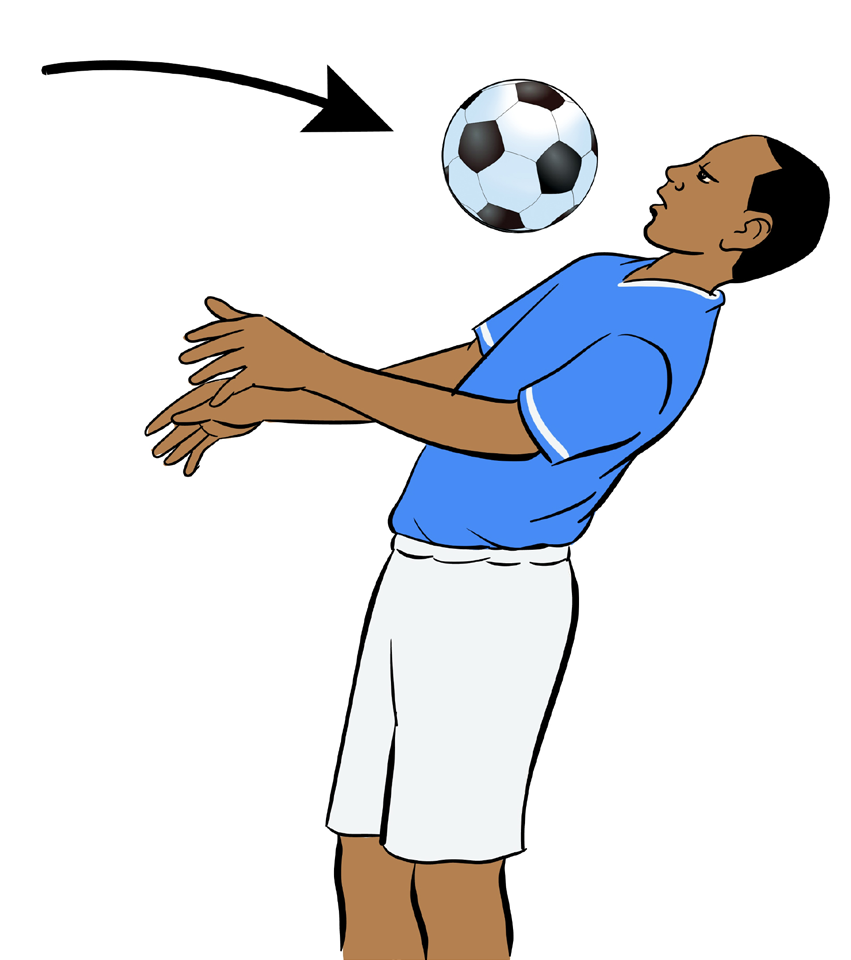

(iv) Have the ball hit the centre of your chest right below your clavicle bone; and
(v) Drop the ball towards your dominant foot within a range of control.

Figure 4.5: Ball control by chest
Controlling by head
The balls that arrives from above the head can be trapped and controlled by the head. The aim of the heading control is to drop the ball to the feet as soon as possible. For a better performance of ball control by head do as follows:
(i) Move into position to intercept the ball early;
(ii) Stay balanced using the arms;
(iii) Watch the ball carefully to judge its direction and speed;
(iv) Keep the head steady, as shown in Figure 4.6;